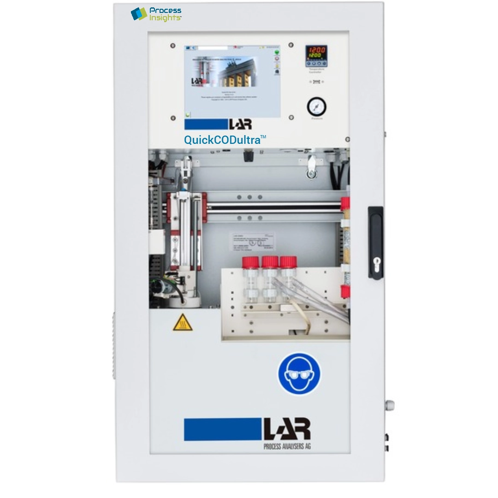
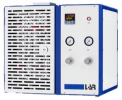

Our LAR™ QuickCODultra™ online COD water analyzer is a high-performance analyzer that measures the chemical oxygen demand (COD) of water samples. To measure the real oxygen demand, the QuickCODultra water analyzer utilizes a UV-activated persulfate digestion method that ensures complete oxidation of all organic compounds in the sample, including difficult-to-oxidize compounds such as humic acids and lignin. The analyzer then measures the amount of oxygen required for this oxidation reaction and calculates the COD value.
Our LAR™ QuickCODlab™ online COD water analyzer is the most reliable measurement system for the determination of the chemical oxygen demand in laboratories. Using this environmentally friendly COD analyzer and analysis technique, you can now determine chemical oxygen demand quickly, cleanly and safely – without any chemicals. Chemical oxygen demand (COD) is one of the most important sum parameters in water analysis. It is considered as a reference for the organic load of wastewater, both in the industrial and municipal sectors. In general, analytical processes are based on the use of different reagents. However, the safe and environmentally friendly procedure is thermal oxidation.

BENEFITS & FEATURES
- Measurement range: 10 – 150 mg/l, 100 – 2,000 mg/l, 500 – 5,000 mg/l, 1,000 – 8,000 mg/l, 20,000 – 250,000 mg/l, further options available
- Fast Response Time: 1 – 2 minutes
- Measures the real oxygen demand
- Highest combustion temperature (1,200°C) available on the market
- Catalyst-free technique
- Reliable measurement without reagents
- No filtration necessary
- No memory effects
- Very low maintenance and operational costs
CONTINUOUS COD WATER ANALYZERS FOR LABORATORIES.
By measuring the COD value, the QuickCODultra onlne COD water analyzer can determine the real oxygen demand of the sample, which is a measure of the amount of oxygen required to oxidize the organic matter present in the sample. This information is useful for a wide range of applications, including monitoring wastewater treatment processes, assessing the quality of drinking water, and evaluating the environmental impact of industrial processes.

APPLICATIONS
- Laboratories.
- Industrial Effluent Monitoring in Industrial Wastewater.
- Monitor Influent Loads in Municipal Wastewater Treatment Facilities.